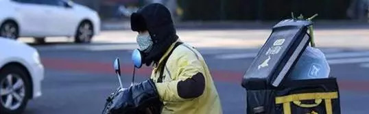
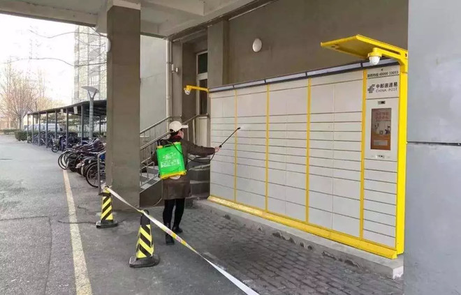

运力短缺、口罩不足，快递小哥的安全谁来守护？
原文链接 备份链接 图片来源：图虫 记者：周伊雪 杨霞 编辑：文姝琪 “ 全国性的人员流动被按下暂停键，依赖线下运力的外卖、快递等行业也因此受到影响。 ” 晚上12点刚过，为次日采购食材的张丽就无奈地发现，7Fresh生鲜超市预约配送的十 …
来源：雪球App，作者： 腾讯棱镜深网，（https://xueqiu.com/6718098612/141480733）

作者 | 孙宏超 相欣 编辑 | 康晓
出品｜深网·腾讯小满工作室
编者按：通过中国各地普通民众的视角和抗疫行动，记录这一段难忘的历史。是为《抗疫日记》系列之七，记录疫情下坚守的外卖员和快递员。
疫情爆发后，重庆、北京这些往日的“堵城”交通均变坦途，市民闭门不出，商场、饭馆纷纷打烊。在这些略显冷清的城市里，是快递员、外卖员让空城的心脏仍在持续跳动。京东配送员乔天和对《深网》表示，“春节期间在北京，路上跑着的几乎都是同行，隔着口罩都能认出来是谁。”
2月3日，在国务院应对新型冠状病毒感染的肺炎疫情联防联控机制新闻发布会上，商务部副部长王炳南表示，疫情发生以来，商务部动员国内的11家主要电商企业，在保障市场供应上积极发挥独特的作用。
其中，电子商务与物流快递协同进一步加强，很多快递小哥奋战在电商保供的第一线，春节期间线上不打烊、线下及时配，特别是生鲜产品，一批生鲜的电商企业发挥了前置仓、实体店到家等特色，满足居民日常生活的需要。
对于这些仍在坚守的“小哥”们来说，这个春节确将终身难忘，“武汉人最爱吃热干面，有的时候我也会在上班前买一个吃，但现在我所在的配送区域根本没有开着的热干面店，就别说其他了。”武汉美团配送员许俊明如此对《深网》表示，“在快递员和外卖员的群里，现在分享的几乎都是疫情相关的事，不像以前主要是聊一些八卦的话题。”
“每送完一个配送点，我还要找地方洗手。”
“小年过去几天，发现附近一家以前冷清的便利店忽然下单特别多，内容都是买口罩。回去之后刷快手和抖音，才发现很多人都在讨论新型肺炎的事情。”武汉美团外卖配送员许俊明回忆说。
1月20号左右，许俊明连续接到了来自一个便利店的6个订单，“这家便利店以前下单数很少，一个月也就三四十单，这次全是要求买口罩的。”许俊明感到有些疑惑。到便利店时，店长正在打电话协调，口罩的总数不足以应付这么多订单，他试图劝说其中一个顾客减少购买口罩的数量并协调退货。
这也是许俊明接到的最后一个关于口罩的订单，“从那天开始，几乎所有武汉的便利店、超市、药店都下架了医用口罩。即便有的时候接到跑腿的订单，我也会告诉他，相关产品都没有货了。”
许俊明来自湖北的另外一个城市，去年刚刚加入美团，听以前的老员工说春节期间会有加班奖励，所以就没有回家过春节，“没想到，就回不去了。”
同样没有返回老家的还有京东物流配送员孔乐康，“因为老家离武汉比较近，本想腊月29那天晚上开车回去的，但疫情忽然爆发，怕回家影响家人，就留在了武汉。”
此时京东已经开始了每年的春节运力调度。不需要春节期间加班的很多快递员都已经购买了火车票，做好了返乡的准备工作，一些春节期间需要加班的一线员工则安排好了调休的日期。
疫情爆发后，京东物流华中分部的全部管理层都主动放弃了休假，一些一线员工则放弃了倒休，部分部承担配送业务的站长、站长助理也都下一线送货。
今年春节期间被安排值班的京东物流武汉仁和营业部快递员张昊选择了留下，“我本来计划初四回湖北应城老家和家人团聚。”但腊月二十九凌晨武汉封城，本来可以提前离开的他选择留在武汉上班。
留下不容易，坚持更难。由于武汉市公共交通现在都已经停止，住在武汉火车站附近的张昊没有办法乘公交车，只能靠骑共享单车上下班，“最大的心愿就是每天天黑之前把货送完，不然天黑了汽车回去不太安全。”
物流最末端的配送人员开始感受到疫情带来的紧张氛围，“青菜有一段时间里很难买到，更别说防护产品了。”在许俊明看来，最好买的就是一些方便食品，超市和便利店的存货相对较多，“有一个经常在我这里下单的客户一下子就买了几十桶方便面和香肠。”
大年三十那一天，是武汉市民通过电商平台购买口罩的一个高峰，孔乐康连续工作了14个小时，才把所有的订单配送完毕。
仍在留守的外卖员、快递员最安心的是防护措施保障，美团骑手许俊明对《深网》表示，“每天大概都有3个或者更多的口罩，一些需要配送特殊区域的外卖员还可以领到护目镜。”京东快递员孔乐康也对《深网》表示，“虽然是没走成被迫留在武汉，但上班更安心一些，毕竟还有口罩可以领。”
根据主要外卖平台、快递公司提供资料显示，除了防护措施保障外，这些平台均为一线工作人员购买了相关专项保险，并每日进行消毒工作的相关提醒。
目前，美团外卖为骑手提供从检查到治疗各阶段最高30万元特殊保障金补助，为因疫情就医的骑手家人提供生活关爱金以及疾病慰问金、门急诊医疗费用报销等最高10万元特殊保障金补助等；饿了么蜂鸟骑手在疫情期间可获得最高30万元的特殊保障金。
为了避免聚集，美团、饿了么等外卖平台均推出了“无接触配送”，消费者在下单时可以勾选该选项，通过智能取餐柜或者约定的位置如门口、前台无接触取餐。
《深网》了解到，随着疫情的发展，美团外卖已经取消了站点的例行早会，各种通知通过骑手平台下发下来。每个站点还配备了体温计、口罩、消毒液和酒精凝胶，外卖员的餐箱早晚必须进行消毒，还要早闻分别测量体温，站点会跟进每位骑手每天上报的健康状况，建立骑手健康台账，公司增加抽检次数，如有异常症状立即停止工作、安排就医并及时报备。站长给外卖员们准备了75度酒精小瓶，让他们在送餐途中发现疑似危险接触时喷洒面部和手部来进行预防。

疫情改变了所有人的生活以及部分人的工作，“每天早上，我们都要在站点测量体温，拿口罩、洗手液，然后才能正常去上班。”美团骑手许俊明对《深网》表示，“除了这些流程以外，每送完一个配送点，我还要找地方洗手。”
除了公司给配的相关防护用品外，孔乐康还自己准备了口罩以及一瓶洗手液，“有的时候必须要和很多人说话，那我就在外面再戴一层口罩，完事再摘下来。”
“顾客大哥送我一个3M口罩，让我觉得很温暖”
2月10日中午，不同于往日的喧嚣，北京三里屯一带无比安静。面对突如其来的疫情，鲜有商户开门，路上不多的行人也纷纷戴着口罩匆匆而去。这里曾是年轻人的聚集地，而因为餐饮商户众多，附近上班族也习惯于外卖这种就餐方式。
此时美团外卖员杨和硕刚刚配送完那天的第三个订单。
春节往往是外卖骑手们获得额外收入的黄金时期，以美团外卖为例，从年前到初六这段时间，单量超过150单即可获得1200元的额外奖金。杨和硕今年春节没回家，为的就是这笔额外奖金，在他看来，这本是一个容易达到的数字。疫情爆发前，北京很多餐馆特意开通了年夜饭或春节不打烊服务，一些老用户也打好了招呼，除夕夜也会选择在餐馆定桌餐送上门。
疫情打破了计划，北京大多数本来春节期间要运营的餐厅最终停业，春节订单减少，据杨和硕所知，他所在的站点多数骑手都没能达到150单的奖励标准。
杨和硕在美团外卖工作接近两年了，在他工作的站点算得上是一位老员工，对附近路线和办公楼、居民区位置了如指掌。平时他每日配送单量约为30单，高峰时期能达到40单，目前每天单量有20单左右。
除了很多餐饮行业不开门这个因素以外，杨和硕的配送范围以悠唐广场、东直门、国贸、三里屯为主，由于疫情来临，许多公司没能正常上班，配送占比很大的写字楼订单几乎为零。而其所在站点的其他外卖员，一天送单数只有10单左右。
据《深网》了解，春节期间，该站点有60名外卖员在正常工作，总外卖员人数约100人。若按照每人每天15单计算，一天下来900单。
有数据显示，在上海饿了么的某外卖站点，春节期间订单量为平时的一半，为600单左右。

配送方式也随着疫情的发展产生了剧烈改变，几乎所有的送货上门服务都变成了“无接触配送”。据乔天和介绍，有快递柜的就放在快递柜里，“但是比较麻烦的是，一些老小区并没有安装快递柜，还有的快递柜装在了小区里面。”
一次，北京某快递公司快递员易敏学在某小区门口等了接近半小时，小区不让进，用户顾客电话打不通，这是一个老小区，还没有安装快递柜。
这一天，北京的气温是零下7度。
和以前北京的拥堵相比，现在的北京无论何时几乎都是一路畅通，京东北京快递员乔天和对《深网》表示，“到配送点很快，单数也比以往多，但是配送的效率反而大大降低。因为绝大多数的小区都是封闭的，即便是没有封闭的小区，我们也会要求住户到小区门口来取件。”
在与《深网》对话的当天，乔天和手上的配送任务大概有100单，其中大部分是之前积累的配送任务，“现在隔天甚至隔两天送可能是常态，绝大多数客户也对此比较理解。”这是乔天和留守北京的第三年，“刚开始的时候还刷刷微博、抖音，但上面太多负面情绪了，现在也不太看，免得影响心情。”
“今年是我留守北京的第三年，要说不辛苦那肯定是假的。”乔天和告诉深网。
但大多数快递员、外卖员仍觉得日子在变好，饿了么春节期间驻守在北京的外卖员李孺对《深网》表示，虽然赚的少了，但是还是觉得很温暖。
“顾客没有以前计较了，以前一些小问题都会被投诉，现在大家都特别客气，还会对我表示感谢。有次一位大哥顺手送了我一个3M口罩。”
“回北京的第一晚，我住在ATM机小隔间”
2月10日，国家邮政局发布消息称，中国邮政、顺丰速运、京东物流、苏宁物流及三通一达等13家寄递企业已自当日起全面恢复。此前，大多数快递公司计划的复工时间是2月3日，但由于受疫情影响，大多数快递网点实际复工时间均大幅延后。

同时，国家邮政局方面明确要求各大快递企业在2月10日实现绝大部分地区运营全面恢复；计划在本月中旬快递业生产要恢复到正常产能的4成以上；到本月下旬，根据疫情变化和形势发展，继续提高产能比重。
三通一达中圆通速递最早宣布全面复工，随后韵达、中通、申通也分别应国家邮政局要求显示全面复工或正常运营，几乎同时宣布全面复工的还有德邦快递和百世快递。
但这种”宣布“在实际执行层面看起来更像是一种态度，尤其是一些加盟制的快递公司。长春的某快递公司加盟商丁宇航表示，往年公司要求初七时全面复工，“目前站点的20个员工只返回了6个人，网点内目前积压了过千包裹，就得慢慢送。”丁宇航对《深网》称，短时间内不会全面复工，“长春虽然感染人数较少，但这些快递员都来自周边城市，或者农村，由于封路或者交通情况很多快递员无法出来，就算回来也还得继续隔离，所以干脆就告诉他们暂时不要回来。”
国家邮政局2019年发布的快递员生存现状调查报告显示，76.31%的快递员来自农村，15.89%的快递员来自县城，仅有7.8%来自城市。
某物流公司北京配送员胡凡来自河南某小县城，在北京某物流公司已经工作三年，“我们那里的小县城完全封了，没有车能带我去火车站，前前后后改了四次火车票才返回北京。到了北京之后，租住的小区保安不让进，要求去社区登记。
胡凡对《深网》表示，由于时间已过午夜，最后他不得不在附近找了个ATM机待了一晚，“外面实在太冷了，好在后来公司给找了个临时的住所，现在马上结束隔离了。”
胡凡对《深网》称，他们网点返回的快递员算是比较多的，“10个返回了8个，但是我们隔壁另一家快递公司的20个快递员只有6个留守在北京的在开工，其他14个根本没回来。”
还有几位相关快递加盟商则对《深网》表示，没必要着急开工，“现在快递网点都不怎么赚钱。”丁宇航对《深网》表示，想开工，现在也买不到口罩，“现在公司要求，配送员必须有足够数量的口罩、消毒液等相关产品才能上岗。”
和快递相比，外卖行业复工更早，初六是美团北京外卖员孙志国返工的第一天。根据以往情况，随着初五、初六返城人员增多，外卖需求也会高涨。
孙志国所在站点属于专送团队性质，站点对外卖员的有上岗时间都有固定要求，上岗或者休息都要提前通知。“公司要求我们初六开始上班，不过因为疫情的原因，后来也没有强制执行。”孙志国回来之后最担心的就是收入问题，据他介绍，每天的单量基本不超过10单，而正常情况每天的单量是30多40单左右，收入一个月能拿六七千，“这个月肯定不行，估计能拿2000就不错了。”孙志国所在站点的外卖员在30人左右，目前基本都陆续上岗。
关于安全问题，孙志国有些担心，不过他也表示，认真做好防护措施，不和客人有近距离接触就不会有太大问题，“配送是不可能停下的，这是老百姓现在的基本生活服务，自己加强防护就好。”
（应快递员、外卖员要求，文中乔天和、许俊明、孔乐康、易敏学、金和硕、李孺、胡凡、丁宇航、孙志国均为化名。）
原文链接 备份链接 图片来源：图虫 记者：周伊雪 杨霞 编辑：文姝琪 “ 全国性的人员流动被按下暂停键，依赖线下运力的外卖、快递等行业也因此受到影响。 ” 晚上12点刚过，为次日采购食材的张丽就无奈地发现，7Fresh生鲜超市预约配送的十 …
原文链接 备份链接 在疫情发展严重的春节期间，很多外卖员却没有离开岗位。除了不能回家过年，他们还要面对极大的被传染风险。在与疫情的战斗中，这些无名的外卖员也付出了很大的贡献。今天这篇文章就来自一位依然坚守岗位的外卖员，我们也想借此对这位 …
原文链接 备份链接 凤凰新闻客户端 凤凰网在人间工作室出品 我家在湖北襄阳，妈妈是襄阳中心医院的医生。疫情发生以来，截至2月17日，襄阳新冠肺炎确诊病例累计1155例，在湖北省排名第七位。 我住在美国华盛顿。 1月21号，我给妈妈打电 …
原文链接 备份链接 来源：八合里微博 记者 | 卢奕贝 编辑 |牙韩翔 “ 受到新型冠状病毒肺炎疫情的影响，通常需要排队2-3个小时的网红火锅店，如今也到了捉襟见肘的地步。 ” 1月25日，大年初一，汕头八合里海记牛肉火锅（下称“八合 …
原文链接 备份链接 《创新经济战疫计划》，是燃财经在新型肺炎疫情期间推出的特别栏目，关注创新经济企业遇到的新难题、商讨应该采取的新对策，希望能够帮助中小企业一起战胜挑战、把握机会。 作者 | 唐亚华 编辑 | 魏佳 2月10日起，北京、上 …